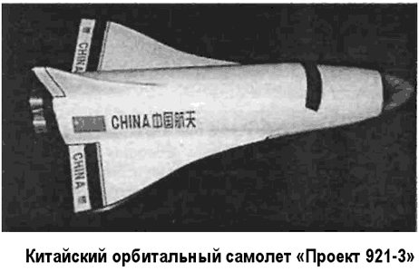
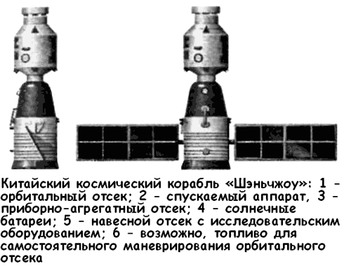
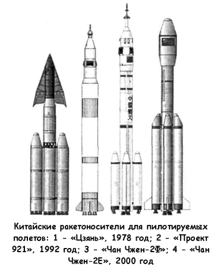
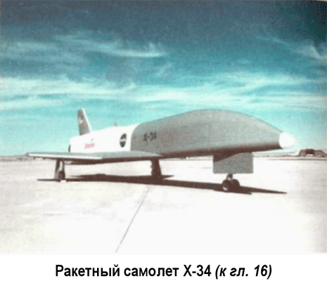
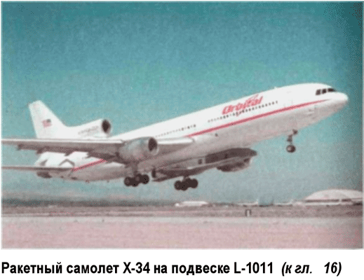

Китайская космонавтика
Свою собственную программу развития пилотируемой космонавтики имеет и Китайская Народная Республика. В ее рамках изучается возможность создания двухступенчатой космической системы с горизонтальными стартом и посадкой — проект «921-3».
Китайский аэро-космический аппарат внешне напоминает немецкий двухступенчатый воздушно-космический самолет «Зенгер», однако отличается от него оригинальной конструкцией смешанной двигательной установки, состоящей из жидкостных ракетных и прямоточных двигателей.

Первая гиперзвуковая разгонная ступень (самолет-разгонщик) будет иметь фюзеляж типа «несущий корпус» (длиной около 85 метров и шириной 12 метров) и треугольное крыло двойной стреловидности. Двигательная установка разгонщика имеет шесть двигателей с суммарной тягой около 40 тонн. Стартовая масса — 330 тонн, посадочная — 79 тонн.
Вторая ступень представляет собой орбитальный самолет со стартовой массой 132 тонны и посадочной массой 25,3 тонны, который оснащен четырьмя кислородно-водородными двигателями. Внешне он похож на американский «Спейс Шаттл».
При разгоне самолета до скорости в 0,8 Маха работают только жидкостные двигатели, после чего в камеры сгорания прямоточных двигателей начинает поступать горючее.
До высоты 9 километров и скорости 1,8–2 Маха жидкостные и прямоточные двигатели работают параллельно, причем по мере того, как при увеличении скорости увеличивается эффективность и тяга прямоточных двигателей, пропорционально уменьшается тяга жидкостных, с тем чтобы удерживать тяговооруженность приблизительно на одном уровне.
После разделения самолет-носитель возвращается к месту старта, используя только прямоточные двигатели. Орбитальный самолет, используя четыре кислородно-водородных двигателя с тягой по 2,1 тонны, выходит на эллиптическую орбиту высотой от 100 до 300 километров. В апогее с помощью жидкостного двигателя сообщается приращение характеристической скорости, в результате чего самолет выходит на круговую орбиту высотой 500 километров.
После выполнения программы полета орбитальный самолет сходит с орбиты, производит снижение в атмосфере и посадку, как гиперзвуковой планер типа «Спейс Шаттл».
Предполагается, что китайский «челнок» сможет выводить на орбиту груз от 4 до 6 тонн. Специальный космодром для китайского корабля многоразового использования будет построен в Южно-Китайском море на острове Хайнань.
Пока аэро-космическая система остается в числе перспективных проектов, китайские конструкторы добились ощутимых успехов в разработке проекта «921-1», промежуточным итогом которого стал успешный запуск трех космических кораблей «Шэньчжоу» («Божественный корабль»).
Проект пилотируемого космического корабля «921-1» был инициирован в 1992 году. Шанхайский исследовательский институт астронавтики предложил шесть вариантов ракетносителей и восемь вариантов космического корабля.

Выбор был сделан в пользу ракеты-носителя «Чан Чжен-2Ф», способной выводить на орбиту 8,5 тонны полезного груза. В качестве прототипа космического корабля решили использовать «Союз». Несколько лет назад Китай закупил у Российского Космического агентства ряд узлов корабля «Союз» и на их основе сделал соответствующие системы для своего корабля. «Шэньчжоу» состоит из приборного отсека со стыковочным узлом и агрегатного отсека с двумя солнечными батареями. Его габариты: длина — 8,65 метра, максимальный диаметр — 2,8 метра, обитаемый объем — 8 м?, масса — 7,6 тонны. Экипаж — 3 человека.
В июне 2000 года в Пекине прошло заседание Китайской инженерной академии на тему «Перспективы инженерной техники». На нем с докладом о перспективах китайской пилотируемой космонавтики выступил главный инженер пилотируемого космического корабля «Шэньчжоу» Ван Юнчжи.
По его словам, создание корабля преследовало четыре главные цели. Во-первых, разработка фундаментальных технологий, необходимых для осуществления пилотируемого полета.
Кроме того, «Шэньчжоу» позволит выполнить программы наблюдения Земли из космоса, провести эксперименты и исследования в различных областях космических наук и технологий.
Также «Шэньчжоу» будет первое время (пока не появятся более совершенные многоразовые корабли) служить транспортным средством для доставки экипажей на орбитальные станции и их возвращения на Землю. И, наконец, на «Шэньчжоу» можно отработать ряд систем будущей китайской орбитальной станции.
Ван Юнчжи добавил, что программа создания пилотируемого космического корабля прошла стадии разработки проекта, научно-технической проработки, макетирования, испытаний и изготовления. Сейчас программа находится на стадии беспилотных летных испытаний.

Первый запуск «Шэньчжоу» в автоматическом режиме состоялся 19 ноября 1999 года с космодрома Цзюцюань в провинции Ганьсу. Через десять минут после старта космический корабль отделился от последней ступени ракеты-носителя и вышел на орбиту с параметрами 195 километров в перигее и 315 километров в апогее. Запуск второго корабля был осуществлен 9 января 2001 года, третьего — 25 марта 2002 года. Все три полета были признаны успешными.
На очереди — полет китайского космонавта. Первая группа «юйчжоу хансиньюаней» была набрана из летчиков-истребителей путем многоэтапного отбора. Они прошли три этапа подготовки. Сначала — общекосмическая подготовка, затем космонавты изучали устройство и системы корабля; сейчас они завершают тренировки в составе экипажей на тренажерах.
Больше всего в китайской космической программе поражает неспешность, с которой принимаются решения и реализуются проекты. Китай оказался в стороне от ожесточенной борьбы за первенство, а потому его космические инженеры имеют возможность тщательно обдумывать свои действия, взвешивая все последствия. Не остается без внимания и экономическая составляющая, что позволяет избежать ненужных затрат и жертв…

